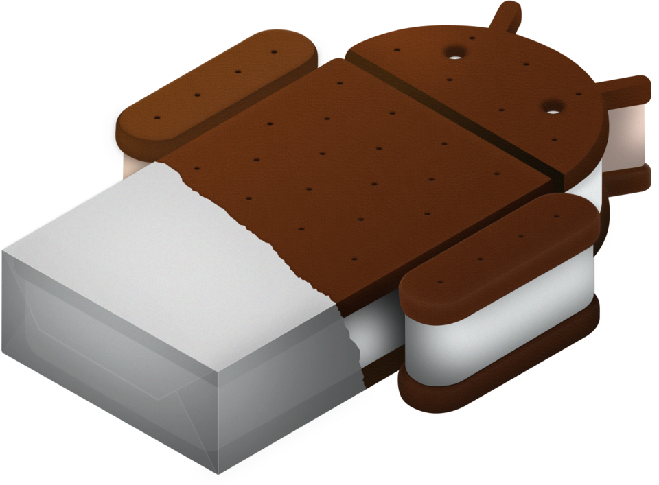

Evolución de Android
Las actualizaciones más importantes a lo largo del tiempo

Android 1.0
Android Alpha
- Primera versión de Android lanzada
- Google Maps integrado
- Navegador web basado en WebKit
- Soporte para correo electrónico
Septiembre 2008

Android 1.5
Cupcake
- Teclado virtual en pantalla
- Grabación de videos
- Búsqueda por voz mejorada
- Auto-rotación de pantalla
Abril 2009

Android 2.0
Eclair
- Soporte para múltiples cuentas de correo
- Fotos de contacto en pantalla de llamadas
- Menú de aplicaciones mejorado
- Mejor rendimiento general
Octubre 2009

Android 2.2
Froyo
- Punto de acceso WiFi portátil (tethering)
- App2SD: instala apps en tarjeta SD
- Velocidad 2-5 veces más rápida
- Soporte para Adobe Flash
Mayo 2010

Android 2.3
Gingerbread
- Interfaz de usuario rediseñada
- Control de la batería mejorado
- Mejor rendimiento del navegador
- Pantalla de inicio personalizable
Diciembre 2010

Android 4.0
Ice Cream Sandwich
- Diseño Holo completamente nuevo
- Reconocimiento de cara para desbloqueo
- Soporte para NFC (pagos inalámbricos)
- Screenshots nativos
Noviembre 2011

Android 4.4
KitKat
- Interfaz más limpia y minimalista
- Mejor rendimiento en dispositivos básicos
- Escritura a mano en búsqueda
- Gestión de almacenamiento mejorada
Octubre 2013

Android 5.0
Lollipop
- Material Design: diseño moderno con colores vibrantes
- Notificaciones mejoradas en la pantalla de bloqueo
- Modo oscuro en Developer Options
- Mejor duración de batería
Noviembre 2014

Android 6.0
Marshmallow
- Permisos granulares (pides permiso al usar la app)
- Modo Doze: ahorra batería apagando apps inactivas
- Android Pay para pagos móviles
- Modo silencioso mejorado
Octubre 2015

Android 7.0
Nougat
- Multi-ventana: divide la pantalla en 2 apps simultáneamente
- Notificaciones agrupadas y personalizables
- Respuestas rápidas en notificaciones
- Indicador de uso de micrófono y cámara
Agosto 2016
Android 8.0
Oreo
- Canales de notificaciones: organiza alertas
- Picture-in-Picture: video flotante
- Apps arrancan más rápido
- Control de apps en background
Agosto 2017

Android 9.0
Pie
- Gestos de navegación sin botones
- Tema oscuro completo
- Adaptative Battery con IA
- Digital Wellbeing integrado
Agosto 2018

Android 10
Android 10
- Fin de nombres de postres
- Control de privacidad centralizado
- Modo oscuro global mejorado
- Ubicación aproximada por defecto
Septiembre 2019